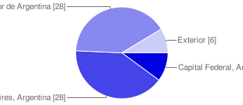
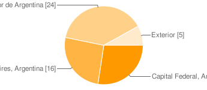
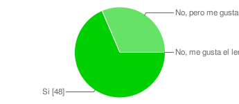
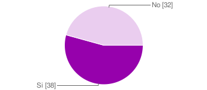
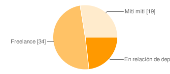
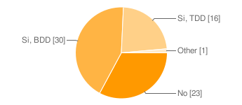
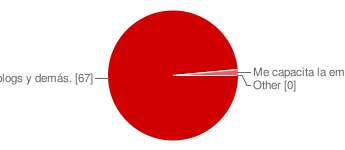
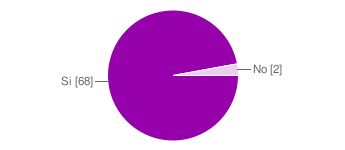

71
responses
¿De dónde sos? | |||||||||||||||||
 |
| ||||||||||||||||
¿Y de dónde vivís en la actualidad? | |||||||||||||||||
 |
| ||||||||||||||||
Acerca de tu trabajo y Ruby
¿Años de experiencia en desarrollo? | |||||||||||||||||||||||||||||||||
| |||||||||||||||||||||||||||||||||
¿Años de experiencia en Ruby? | |||||||||||||||||||||||||||||||||
| |||||||||||||||||||||||||||||||||
¿Estás trabajando con Ruby? | |||||||||||||
 |
| ||||||||||||
¿Buscás trabajo con Ruby? | |||||||||
 |
| ||||||||
¿Modalidad de trabajo actual? | |||||||||||||
 |
| ||||||||||||
¿Y modalidad de trabajo que querés? | |||||||||||||
 |
| ||||||||||||
¿Trabajás para Argentina o para afuera? | |||||||||||||
 |
| ||||||||||||
Si buscás trabajo, ¿Qué es lo buscás? | |||||||||||||||||||||||||||||||||
People may select more than one checkbox, so percentages may add up to more than 100%. | |||||||||||||||||||||||||||||||||
Si lo que buscás no se encuentra en la lista de arriba, podés escribirlo aquí
¿Cuántas horas por día trabajás? | |||||||||||||||||||||||||||||
| |||||||||||||||||||||||||||||
¿y días a la semana? | |||||||||||||||||||||||||||||
| |||||||||||||||||||||||||||||
Si querés, ¿Cuánto estás cobrando por mes? | |||||||||||||||||||||||||
| |||||||||||||||||||||||||
Ya que estamos...
Testing? | |||||||||||||||||
 |
| ||||||||||||||||
¿Cómo te capacitás? | |||||||||||||
 |
| ||||||||||||
¿Qué sistema operativo usás para desarrollar? | |||||||||||||||||
People may select more than one checkbox, so percentages may add up to more than 100%. | |||||||||||||||||
¿Y en el servidor de producción? | |||||||||||||||||
People may select more than one checkbox, so percentages may add up to more than 100%. | |||||||||||||||||
¿Estás suscripto a la lista de Ruby Argentina? | |||||||||
 |
| ||||||||